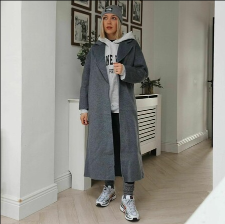
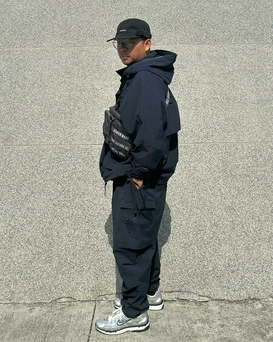
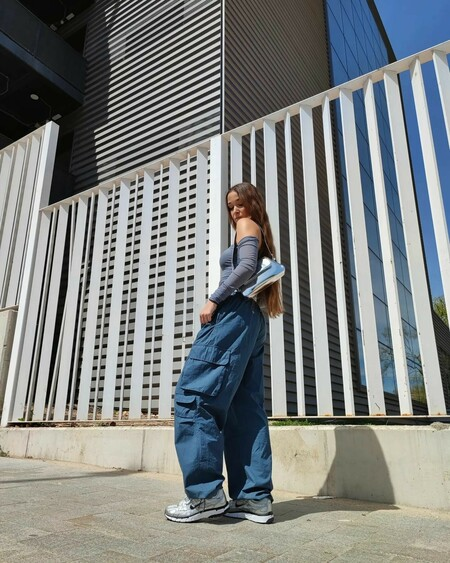
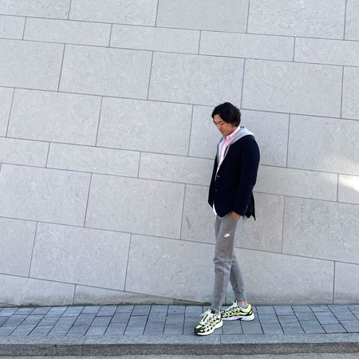
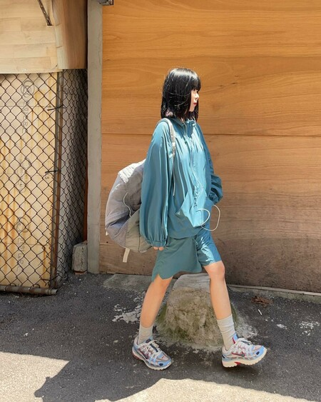
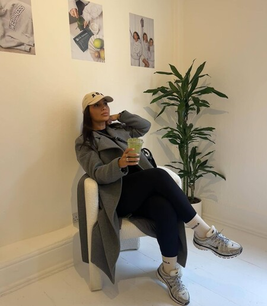
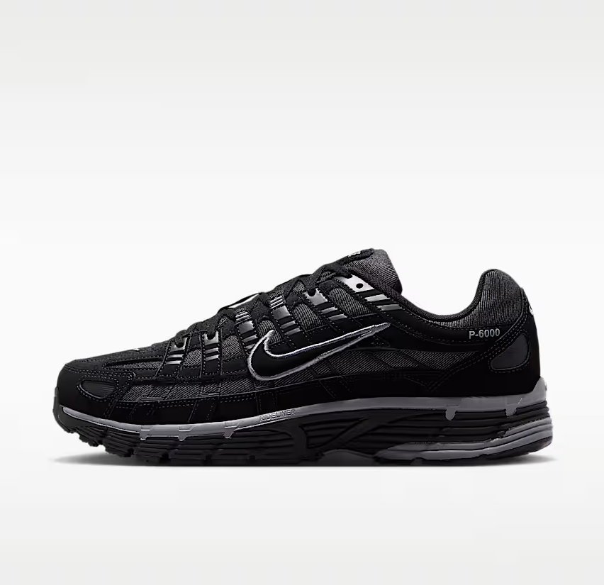

Nike P-6000
Schoenen
€ 119,99
.avif)
.avif)

.avif)
.avif)
Dit product komt niet in aanmerking voor promoties en kortingen op de site.
Niet zeker van je maat? Zoek een store bij jou in de buurt
De P-6000 leent zijn vorm van de hardloopschoenen uit de jaren negentig en maakt er een schoen van voor elke dag. Licht genoeg om de hele dag te dragen, met genoeg demping om er ook mee te kunnen rennen.
- Kleur: wit, grijs en zwart
- Artikelnummer: CD6404-002
- Bovenwerk van mesh met kunstleren details
Bekijk productgegevens
Het bovenwerk bestaat uit mesh met kunstleren overlays. De tussenzool van schuim vangt je stap op en de rubberen buitenzool geeft grip op straat.
Verzending en retourneren
Bezorging duurt twee tot vier werkdagen. Je kunt je bestelling binnen dertig dagen gratis retourneren.
Beoordelingen (1057)
Deze schoen krijgt gemiddeld 4,8 van de 5 sterren. Kopers noemen vooral de pasvorm en het comfort bij langer lopen.
Lees alle beoordelingenHoe anderen het dragen
Upload je foto met #nikestyle om te laten zien hoe jij de P-6000 draagt.
-
@nikefan
-

@streetstyle
-
@dailyfit
-
@sneakerdagboek
-

@sneakerdagboek
-

@sneakerdagboek
Maak de look af
-

Klaar voor de stad
-

Rustige basis
-

Warm ingepakt
Ontdek de Nike P-6000


Traditionele hardloopstijl
De vorm komt van de hardloopschoenen uit de jaren tweeduizend. Die lijnen zijn gebleven, de rest is bijgewerkt.

Gemaakt voor comfort
De tussenzool van schuim vangt je stap op, zodat je er ook een hele dag op kunt staan.

Rotsvaste grip
De rubberen buitenzool met golfprofiel houdt je op de been, ook als het nat is.
Misschien vind je dit ook leuk
-

Nike P-6000
Herenschoenen
€ 109,99
-

Nike Air Max
Herenschoenen
€ 139,99
-

Nike P-6000
Herenschoenen
€ 89,99
-

Nike P-6000
Herenschoenen
€ 87,49
-

Nike Mind
Schoenen
€ 129,99